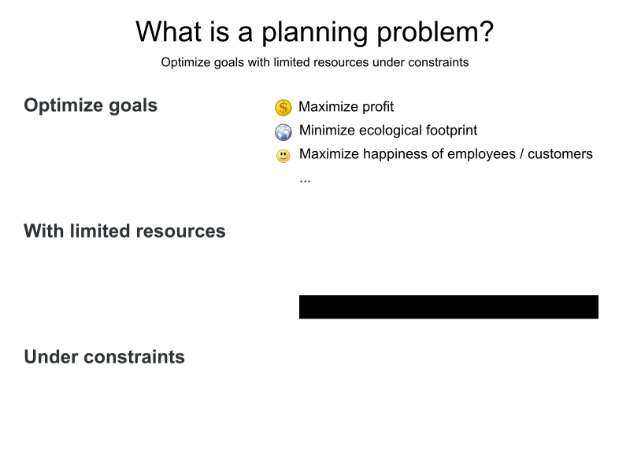
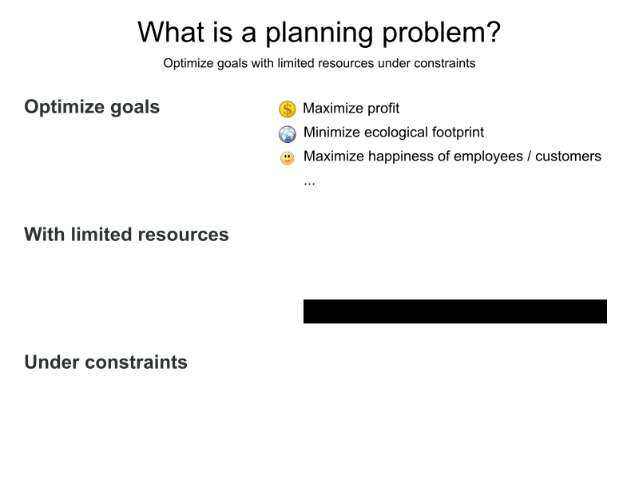
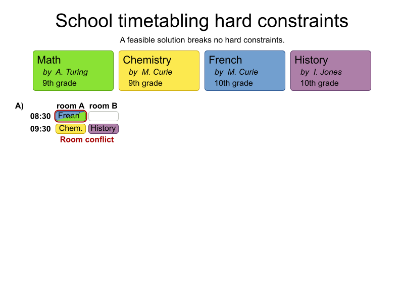
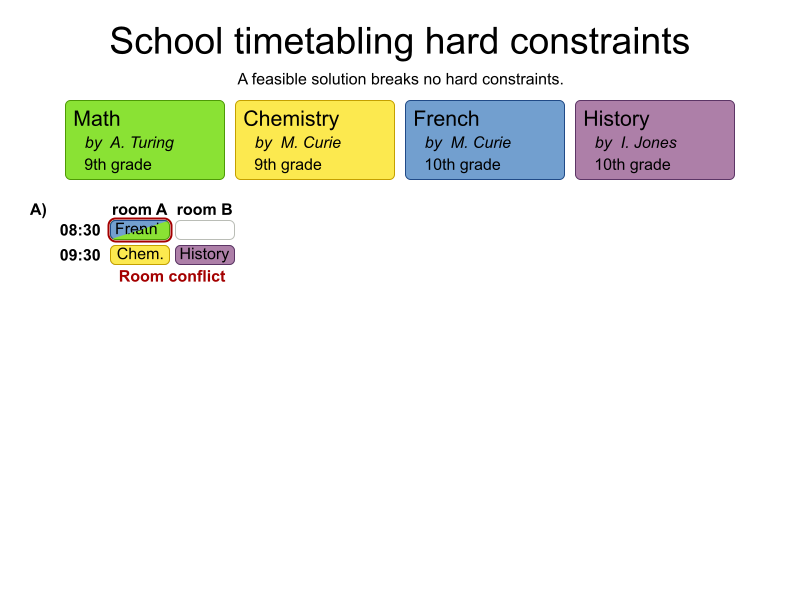
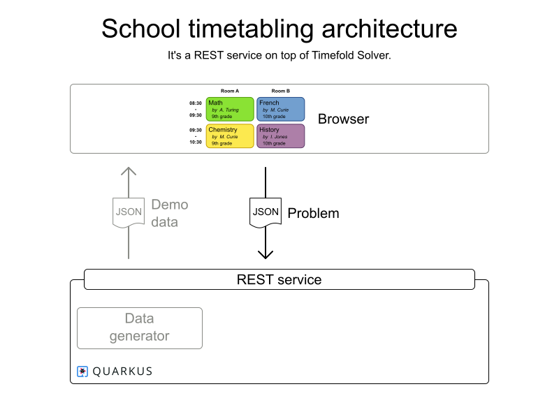
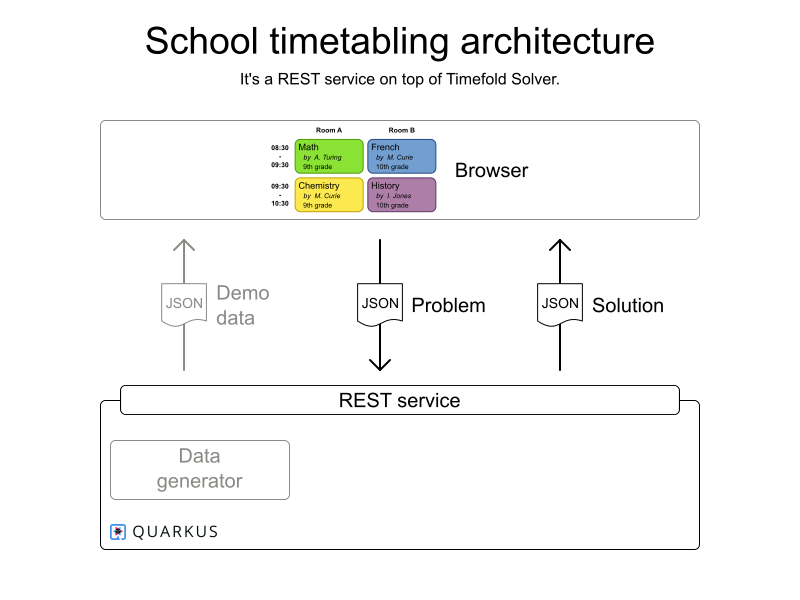
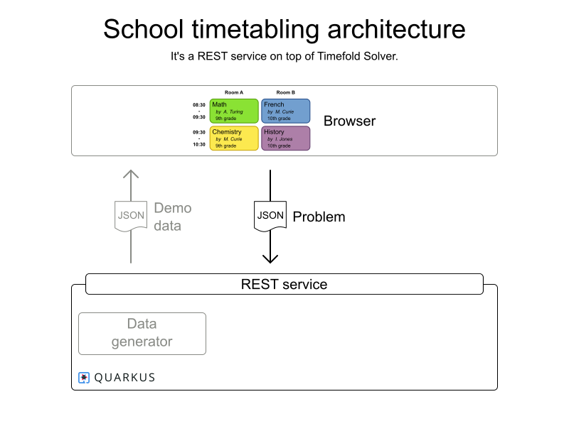
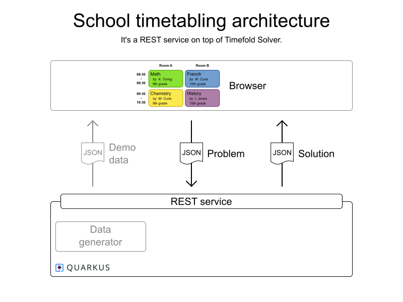

Repo: https://github.com/TimefoldAI/timefold-quickstarts
Introduction to Timefold
by Tom Cools and Lukas Downes
Workshop preparation
- Clone https://github.com/TimefoldAI/timefold-quickstarts
- Run java/school-timetabling
Checks:
- ✅ you should see the UI
- ✅ should be able to click the "solve" button.
The world is full of planning problems
 



For example


The world is full of
scheduling problems
Optimize goals with limited resources under constraints
Some are automated
Few are optimized
Let's optimize them
with Java and metaheuristics
Is optimization worth it?

Vehicle routing case study
Expected: -1% driving time
Result: -25% driving time
⇒ -10 million kg CO² emission per year
⇒ -$100 million cost per year
Example Use Cases
| üöö Vehicle Routing | üßë‚Äçüíº Employee Scheduling |
| üõ†Ô∏è Maintenance Scheduling | üì¶ Food Packaging |
| üõí Order Picking | üè´ School Timetabling |
| üè≠ Facility Location Problem | üé§ Conference Scheduling |
| üõèÔ∏è Bed Allocation Scheduling | üõ´ Flight Crew Scheduling |
| üë• Meeting Scheduling | ✅ Task Assigning |
| üìÜ Project Job Scheduling | üèÜ Sports League Scheduling |
| üèÖ Tournament Scheduling | ...and many more |
School timetabling
Schools often have multiple full-time employees to create the timetables.
Odisee Hogeschool?
üëÄ
 



To optimize you need to evaluate.
Penalty/Reward Function
Constraints = rules that penalize/reward
Goal: minimize penalties / maximize rewards
Implement yourself?
Planning optimization made easy
- Library of optimization algorithms
- AI, not ML
- Open Source (Apache license)
- Actively developed by our Open Core company


Let's get practical


 





School timetabling - Exercise
üíª Adapt the code üíª
Code in repository: java/school-timetabling
- Marie Curie doesn't like to teach in the afternoon
- Don't teach History and Spanish at the same time
- Make the teachers come to school every day
- Give the teachers the most terrible schedule gaps
- Teachers may only work 2 consecutive lessons
Note: Remember to also test your constraints üòâ
Constraint marieCurieDoesntWantToWorkAfternoons(
ConstraintFactory constraintFactory) {
return constraintFactory
.forEach(Lesson.class)
.filter(lesson -> lesson.getTeacher().equals("M. Curie")
&& lesson.getTimeslot().getEndTime()
.isAfter(LocalTime.NOON))
.penalize(HardSoftScore.ONE_SOFT)
.asConstraint(
"M. Curie doens't like working in the afternoon.");
}
Constraint dontTeachSpanishAndHistoryAtTheSameTime(
ConstraintFactory constraintFactory) {
return constraintFactory
.forEachUniquePair(
Lesson.class,
Joiners.equal(Lesson::getTimeslot))
.filter((lesson1, lesson2) -> {
String subject1 = lesson1.getSubject();
String subject2 = lesson2.getSubject();
return (subject1.equals("Spanish")
&& subject2.equals("History"))
|| (subject2.equals("Spanish")
&& subject1.equals("History"));
})
.penalize(HardSoftScore.ONE_SOFT)
.asConstraint(
"Don't give Spanish and history at the same time.");
}
Constraint teachersMustComeToSchoolEveryDay(
ConstraintFactory constraintFactory) {
return constraintFactory
.forEach(Lesson.class)
// we groeperen alle leerkrachten met een set van dagen waarop ze werken
.groupBy((lesson) -> lesson.getTeacher(),
ConstraintCollectors.toSet(
lesson -> lesson.getTimeslot().getDayOfWeek()))
// met deze demodata plannen we voor 5 dagen
// dus het aantal dagen dat er niet gewerkt wordt
// = 5 - (aantal dagen dat er gewerkt wordt)
.map((teacher, dayOfWeekList) -> teacher,
(teacher, dayOfWeekList) -> 5 - dayOfWeekList.size())
.penalize(HardSoftScore.ONE_SOFT,
(teacher, unassignedDayOfWeekCount) -> unassignedDayOfWeekCount)
.asConstraint("Teachers must work everyday");
}
Constraint teachersMustHaveScheduleGaps(ConstraintFactory constraintFactory) {
return constraintFactory
.forEach(Lesson.class)
// groepeer de leerkrachten per dag van de week
.groupBy((lesson) -> lesson.getTeacher(),
lesson -> lesson.getTimeslot().getDayOfWeek(),
ConstraintCollectors.toConnectedTemporalRanges(
lesson -> lesson.getTimeslot().getStartTime(),
lesson -> lesson.getTimeslot().getEndTime()))
// het doel is om zo groot mogelijke schedule gaps te hebben
// => we rewarden de grootste schedule gaps
.reward(HardSoftScore.ONE_SOFT, (teacher, dayOfWeek, connectedRange) -> {
int max = 0;
for (var gap : connectedRange.getGaps()) {
max = Math.max(max, (int) gap.getLength().toMinutes());
}
return max;
})
.asConstraint("So many sweet schedule gaps.");
}
Constraint teacherShouldntHaveMoreThan2ConsecutiveShift(ConstraintFactory constraintFactory) {
return constraintFactory
.forEach(Lesson.class)
// door connectedTemporalRanges te gebruiken houden we geen rekening met
// de middagpauze, de middagpauze onderbreekt de opeenvolging van lessen waardoor meer dan 2 lessen
// elkaar kunnen opvolgen zolang er een middagpauze tussen zit. Dit kan zowel een feature als een bug zijn
.groupBy((lesson) -> lesson.getTeacher(),
lesson -> lesson.getTimeslot().getDayOfWeek(),
ConstraintCollectors.toConnectedTemporalRanges(lesson -> lesson.getTimeslot().getStartTime(),
lesson -> lesson.getTimeslot().getEndTime()))
// https://docs.timefold.ai/timefold-solver/latest/constraints-and-score/score-calculation#constraintStreamsFlattening
.flattenLast(connectedRanges -> connectedRanges.getConnectedRanges())
// we penalizeren wanneer een connected range langer is dan 2 x de duratie van een time slot (60min)
.filter((teacher, lesson, connectedRange) -> connectedRange.getLength().toMinutes() > 2 * 60L)
// de grootte van onze penalty is 1 per lesuur
.penalize(HardSoftScore.ONE_SOFT,
(teacher, dayOfWeek, connectedRange) -> (int) (connectedRange.getLength().toMinutes() - 2 * 60) / 60)
.asConstraint("So few consecutive lessons.");
}
Conclusion
The world is full of
scheduling problems
Optimize goals with limited resources under constraints
Using Timefold
üñä Model domain
⚖️ Define constraints
üöÄ Run!
Continue learning
Experiment with other quickstarts
- Go to timefold.ai
- Click the Quickstarts repo button.
- Pick a quickstart from the README.
- Run it:
$ git clone https://github.com/TimefoldAI/timefold-quickstarts.git
...
$ cd timefold-quickstarts/java/maintenance-scheduling
$ mvn quarkus:dev
...Q & A
| Learn more | timefold.ai |
|---|---|
| Feedback |
|
| Get started |

|